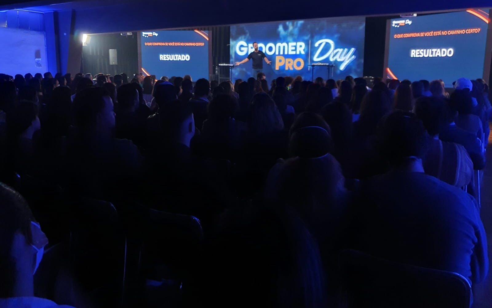

Referência em Ensino
A Belas Patas é Referência em Ensino e foi fundada por Renato Leiva, profissional que atua há mais de 12 anos no mercado Pet e é referência no mercado de estética animal. Atualmente já formamos e especializamos centenas de alunos que atuam com seu próprio negócio ou são destaque nos maiores pet shops do Brasil, e do mundo como: Portugal, Canadá e Peru.
O nome Belas Patas foi criado para homenagear a beleza (Belas) dos animais (Patas). Além de homenagear os animais, o nome Belas Patas também homenageia os Profissionais do Mercado que fazem com que a beleza dos pets seja realçada com os melhores produtos e técnicas que existem no mundo.
Reconhecimento Mundial
Recebemos o título de escola Referência por 3 anos consecutivos (2014, 2015 e 2016) reconhecida e certificada internacionalmente pela Canine Grooming Academy — Espanha.
Realizamos cursos visando o envolvimento de vários temas diferenciados para fazer com que o aluno tenha um ótimo rendimento durante as aulas e esteja pronto para ser um profissional de sucesso.
Patrocinadores e Ética Profissional
Somos patrocinados e parceiros das melhores empresas do mercado nacional e internacional como: Groomer Shop, Mundo Animal, Propetz, By Beca, Plenitude e Dog & Co. Estas parcerias têm por objetivo a utilização da melhor tecnologia, inovação e conhecimento que existe no mundo.
Com a Certificação Profissional Belas Patas o aluno também recebe em seu certificado o Logotipo de nossos parceiros comprovando que o mesmo se formou utilizando os melhores e mais conceituados produtos e equipamentos do Mercado Pet Nacional e Internacional.
Durante todo o curso de Banho e Tosa ensinamos o aluno a trabalhar alinhados com o Código de Ética Profissional da Estética Animal, o que faz com que o mesmo esteja pronto para lidar com as mais diversas situações com seus clientes, animais, funcionários, equipe, parceiros e todo o mercado.
Nossa Missão
"Transformar nossos alunos em profissionais, realizar cursos de excelência, ensinar com qualidade, ética e profissionalismo, potencializar o talento de nossos alunos com conhecimento e técnica, e compartilhar nosso sucesso com nossos alunos e parceiros."

Pronto para ser um Groomer de Elite?
Junte-se à escola que é referência nacional e internacional. Garanta sua vaga hoje mesmo.
Falar com Consultor